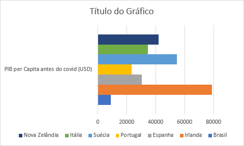
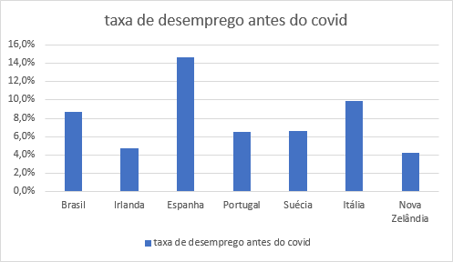

A econômia antes do Covid estava melhor se comparado atualmente, antes as taxas de desemprego era relativamente menor, com taxas menores de 10% na maioria dos países, além de ter um PIB per capita maior do que agora como mostrado nos gráficos abaixo:


Econômia depois do Covid
A econômia depois do Covid está pior como visto em taxas negativas da econômia mostradas recentemente, isso acaba se refletindo nos desempregos, que se a empresa não lucra, eles não têm condições monetárias para manter muitos funcionários ou até fechar as portas. Uma coisa para ser notada é que os países que teve menos sequelas com a pandemia foram países com um IDH mais alto se comparado com o Brasil, que atualmente ainda está em estado crítico da pandemia.